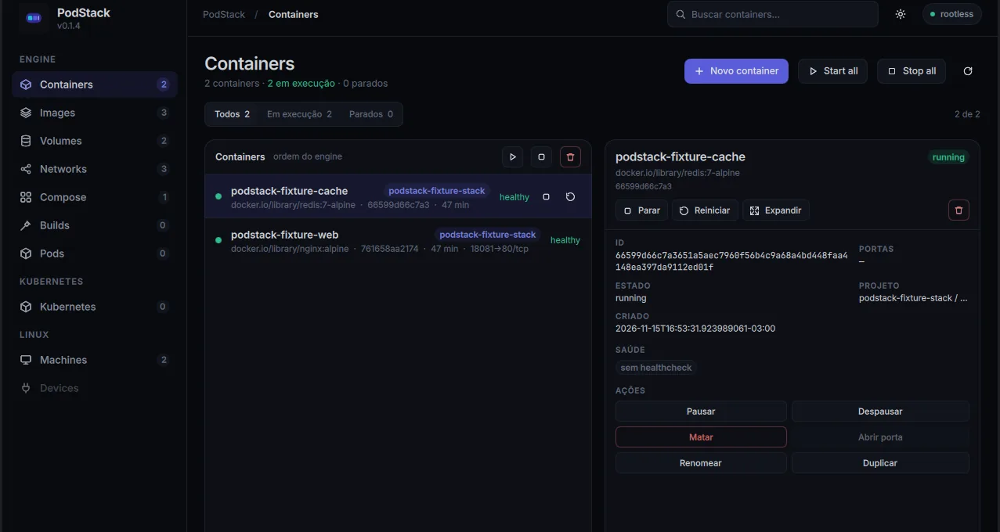
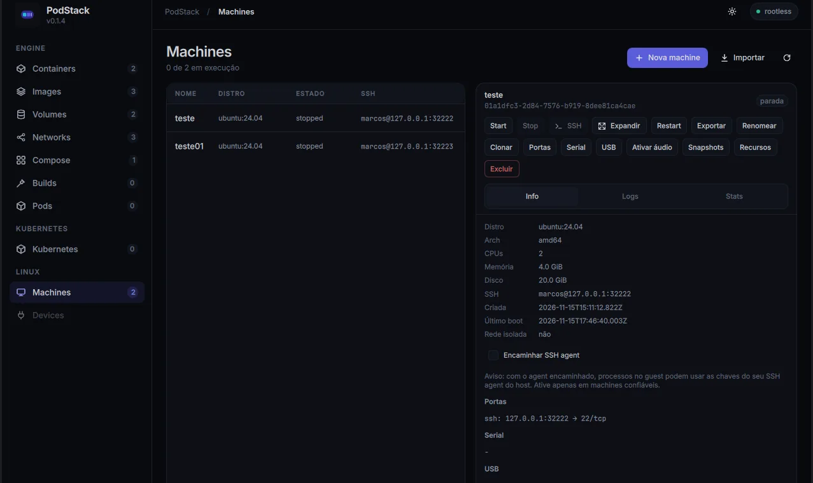
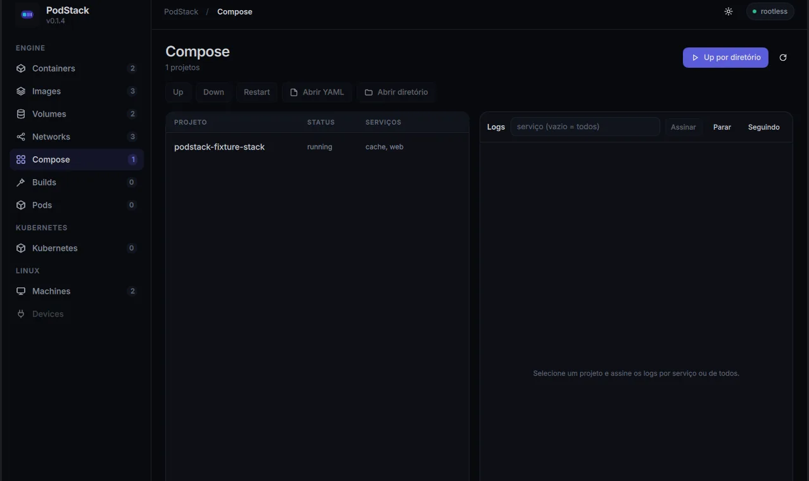

Fedora · RPM
Fedora 43/44 · Podman 5.8+ · Qt 6.10+
sudo dnf install \
./podstack-0.1.5-1.fc44.x86_64.rpmEm desenvolvimento. O PodStack ainda está em desenvolvimento ativo: recursos, CLI e contrato RPC podem mudar entre versões. Use em ambiente de teste e reporte problemas no GitHub.
Podman nativo · rootless por padrão · GPL-3.0
O PodStack reúne containers, Compose, imagens, volumes, redes, VMs QEMU/KVM, um cluster k3s e domínios locais em um único app Qt 6 sobre o Podman nativo — com CLI scriptable e daemon de usuário. Sem sudo no dia a dia.
Versão 0.1.5 · todas as releases · documentação

O que normalmente exige uma dezena de comandos está na mesma janela — e também na CLI.
Criar, iniciar, parar e remover; logs ao vivo, terminal, arquivos, estatísticas e inspect no painel de detalhe.
Projetos detectados pelos labels do Podman, com up/down, logs por serviço e build por Dockerfile.
VMs QEMU/KVM com SSH, troca de arquivos, virtiofs, snapshots, port forwarding e console serial.
k3s em uma VM dedicada, com port-forward, troca de contexto e kubeconfig gerenciados pelo app.
*.localhost e *.podstack.local apontando para os seus serviços, com HTTPS pela CA interna.
O mesmo motor da GUI por JSON-RPC 2.0 em Unix socket, com saída JSON e exit codes estáveis para scripts.
E mais: imagens com pull/push e prune com prévia, volumes com clone e importação do host, redes bridge com aliases e pods do Podman.

Nem tudo roda em container. As machines criam VMs QEMU/KVM com o hardware que você escolher — e continuam a um clique de distância.

compose.yml ao ambiente rodandoO projeto aparece sozinho, com status e serviços. Suba, pare, reinicie e acompanhe os logs por serviço na mesma tela.
Nada de runtime próprio: o engine é o Podman que você já tem instalado.
A interface Qt e o podstack usam JSON-RPC 2.0 sobre $XDG_RUNTIME_DIR/podstack/control.sock, com diretório 0700 e socket 0600.
podstackd conversa com o podman.socket pela API Libpod REST. QEMU/KVM, Caddy e k3s entram só quando você usa machines, domínios e Kubernetes.
Tudo roda com o seu usuário. Quando uma ação precisa de sistema, ela passa pelo podstack-helper, com polkit e uma allowlist declarativa — nunca shell, nunca setuid.
Rootful é escolha explícita, com aviso e requisitos de acesso ao socket.
Streams, jobs e builds rodam em worker threads; a interface nunca bloqueia.
RPM para Fedora 43/44 e DEB para Ubuntu 24.04–26.04, com updates assinados.
Escolha o pacote da sua distribuição. A versão mais recente é a 0.1.5.
Fedora 43/44 · Podman 5.8+ · Qt 6.10+
sudo dnf install \
./podstack-0.1.5-1.fc44.x86_64.rpmUbuntu 24.04–26.04 · Podman 4.9+ · Qt 6.4+
sudo apt install \
./podstack_0.1.5_amd64.debQualquer distro · CMake + Ninja
git clone \
https://github.com/marcos2872/podstack.git
cd podstack
cmake --preset release \
&& cmake --build --preset releaseAntes de instalar. O PodStack está em desenvolvimento e depende do Podman já instalado (podman --version e podman info devem funcionar sem sudo). Cada release publica SHA256SUMS, manifesto de atualização e SBOM.
A documentação cobre instalação, o setup em 7 etapas, cada tela do app, a CLI e a solução de problemas.